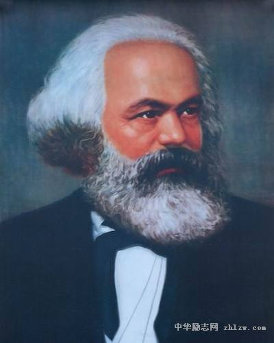
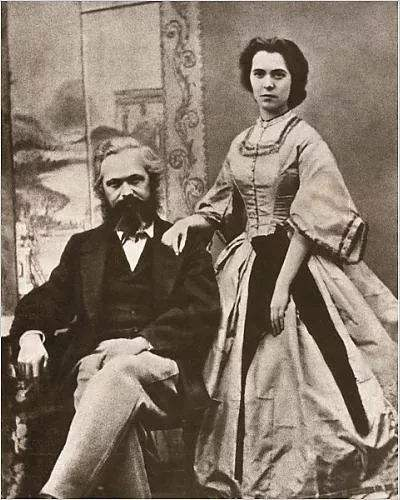

About马克思
马克思主义的创始人，第一国际的组织者和领导者，全世界无产阶级和劳动人民的伟大导师，无产阶级的精神领袖，当代共产主义运动的先驱，伟大的政治家、哲学家、经济学家、革命理论家、社会学家、革命家，社会学三巨头之一，主要著作有《资本论》、《共产党宣言》。
马克思广为人知的哲学思想为历史唯物主义，其最大的愿望是对于个人的全面而自由的发展，当下学术界认为马克思最为重要的是实践哲学，因为实践是检验真理的唯一标准，其历史唯物观也需要在实践中得到证实。
马克思于1818年公历5月5日生于德意志联邦普鲁士王国莱茵省（现属于德国莱茵兰-普法尔茨州）特里尔城一个律师家庭，他的祖父洛宾·列维（Rabbin Marc Levy）是一名犹太人律法学家，他的父亲是希尔舍·卡尔·马克思，同荷兰裔犹太女子罕丽·普列斯堡（Henriette Presborck）结婚，生育多名子女，但从一确定继承人的文件中发现，只有卡尔·马克思和三个女儿索非亚、爱米尔、路易莎存活。
马克思主义哲学
马克思主义哲学通过对阶层冲突的分析来帮助理解系统性的经济社会变迁。马克思主义哲学认为阶级冲突是由于资产所有者所拥有的高生产率生产资料与无产者从事的社会化劳动之间的矛盾越来越大导致的。由无产者劳动所得的价值剩余未能公平的分配给劳动者而集中在资产所有者手上
科学社会主义
科学社会主义是与空想社会主义相对而言的、关于社会主义的科学的理论体系、理论模型与实践模式。科学社会主义是人类一切文明成果的结晶
马克思主义政治经济学
马克思恩格斯批判地继承古典政治经济学的优秀成果,着重剖析了资本主义的经济关系,创立了剩余价值学说,揭示了资本主义生产和剥削的秘密,揭露了无产阶级与资产阶级之间阶级对立和斗争的经济根源,论证了资本主义的必然灭亡和社会主义的必然胜利的客观规律,指明了无产阶级的历史使命就是推翻资本主义制度和建立社会主义制度,最终实现共产主义